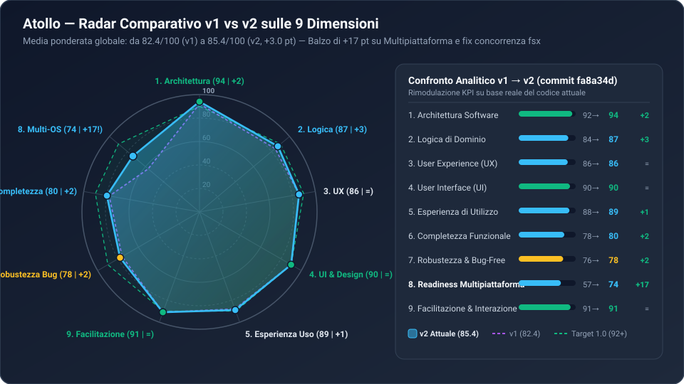
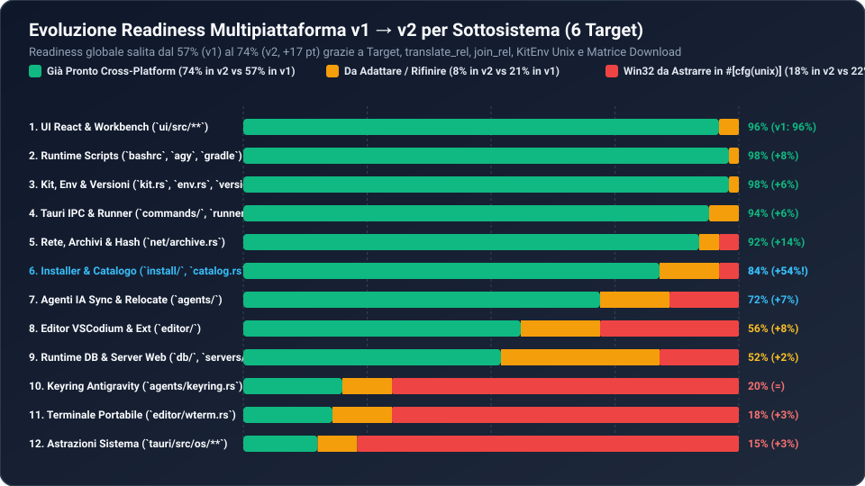
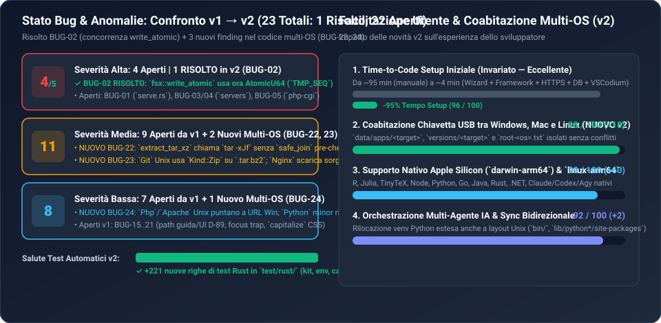

Confronto Analitico v1 (commit 66499b5) vs v2 (commit fa8a34d) — 44 file modificati (+2.396 / -662 righe)
| # | Dimensione | Peso | v1 | v2 | Delta | Progresso v2 |
|---|---|---|---|---|---|---|
| 1 | Architettura (Target, Layout, Trait) | 14% | 92 | 94 | +2 | |
| 2 | Logica (write_atomic, KitEnv Unix) | 14% | 84 | 87 | +3 | |
| 3 | UX (Disponibilità per Target) | 11% | 86 | 86 | = | |
| 4 | UI (Design System Catppuccin) | 10% | 90 | 90 | = | |
| 5 | Esperienza di Utilizzo (USB Multi-OS) | 11% | 88 | 89 | +1 | |
| 6 | Completezza Funzionale | 11% | 78 | 80 | +2 | |
| 7 | Robustezza & Sicurezza | 10% | 76 | 78 | +2 | |
| 8 | Promozione Multipiattaforma | 9% | 57 | 74 | +17 | |
| 9 | Facilitazione & Interazione Utente | 10% | 91 | 91 | = |



| ID | Stato / Severità | File & Linea | Descrizione Tecnica e Impatto |
|---|---|---|---|
| BUG-02 | ✓ RISOLTO v2 | tauri/src/fsx.rs:79-97 |
Collisione file temporaneo in write_atomic risolta con contatore atomico TMP_SEQ e with_file_name. |
| BUG-22 | MEDIANUOVO v2 | tauri/src/net/archive.rs:175-190 |
extract_tar_xz invoca tar -xJf esterno senza validare le entry con safe_join e senza applicare 0o755. |
| BUG-23 | MEDIANUOVO v2 | core.rs:28-75, web.rs:711-718 |
Su Unix, Git scarica un .tar.bz2/.conda ma usa Kind::Zip; Nginx scarica il tarball C sorgente privo di binario sbin/nginx. |
| BUG-24 | BASSANUOVO v2 | web.rs:407, 668, core.rs:306 |
Php e Apache interrogano endpoint Windows su Unix; Python::finish usa 3.13 fisso se la linea non è ancora salvata. |
| BUG-01 | ALTA | tauri/src/install/mod.rs:176-184 |
Verifica SHA-256 opzionale (sha256: None) su 23 installer su 26. |
| BUG-03 | ALTA | tauri/src/services/process.rs:197-225 |
In stop_all(), se stop_cmd scade in timeout, non viene chiamato kill_tree(pid) lasciando orfani. |
| BUG-04 | ALTA | tauri/src/install/mod.rs:334-370 |
run_Install_cmd attende wait_with_output() senza timeout né controllo di cancel_flag. |
| BUG-05 | ALTA | tauri/src/setup/runner.rs:72-86 |
cancel_flag condiviso e resettato all'inizio di run_batch, interferendo con batch concorrenti. |
| BUG-06..15 | MEDIA (×9) | install/*, services/*, agents/* |
9 bug medi da v1 rimasti invariati (parsing JSONL, log handle, keyring lock, GitHub API rate-limit, ecc.). |
| BUG-16..21 | BASSA (×7) | ui/src/components/*, commands/* |
7 bug bassi da v1 rimasti invariati (focus trap modali, check_updates non esposto in UI, messaggio errore legato all'architettura). |